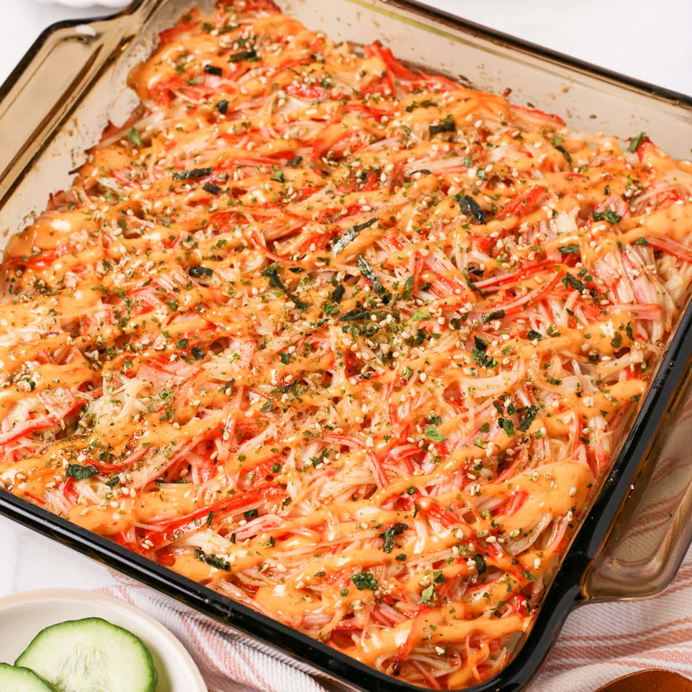
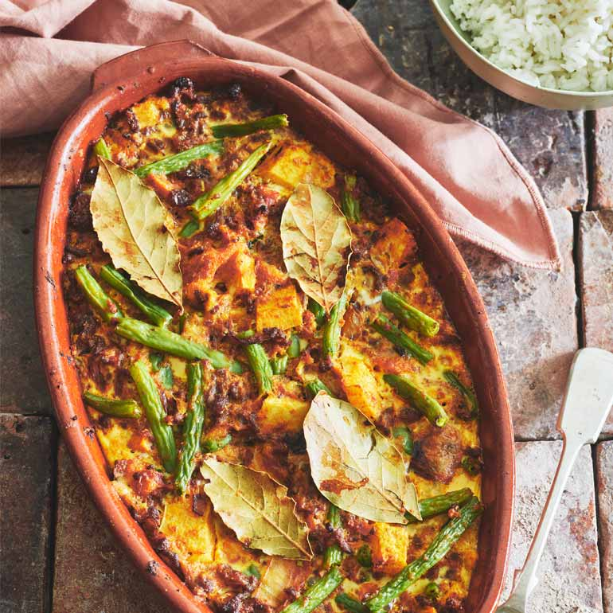

What do you want to make today?

Sushi Bake
Sushi Bake is a trendy Japanese-inspired dish that consists of sushi rice and more.

Tteokbokki
Spicy, chewy, and oh-so-addictive, tteokbokki is a beloved Korean street food made from rice cakes cooked in a fiery chili sauce.

Bobotie
A fusion of sweet and savory flavors, Bobotie is a beloved South African dish made with spiced ground meat and topped with custard. It's comfort food at its best!.
Cooking is about passion, so it may look slightly temperamental in a way that it's too assertive to the naked eye.
- Gordon Ramsey